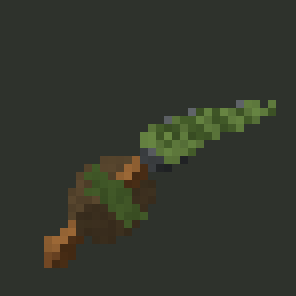
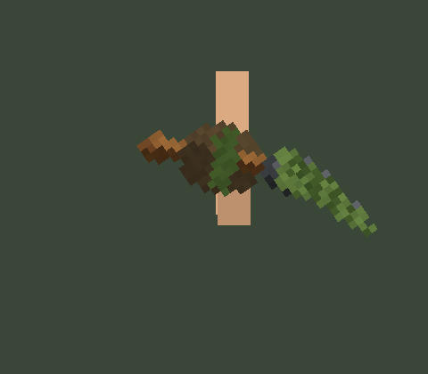

Option 1: "Mossbrand"
A rustic wooden-sword cosmetic for CoffiebagSupreme — a two-handed druid field scythe with a brown wood handle and a dark, moss-patina'd iron blade curving off the top.


Temporary preview page for a pending cosmetic token request. This page is not linked from the site and will be removed once the pick is applied.